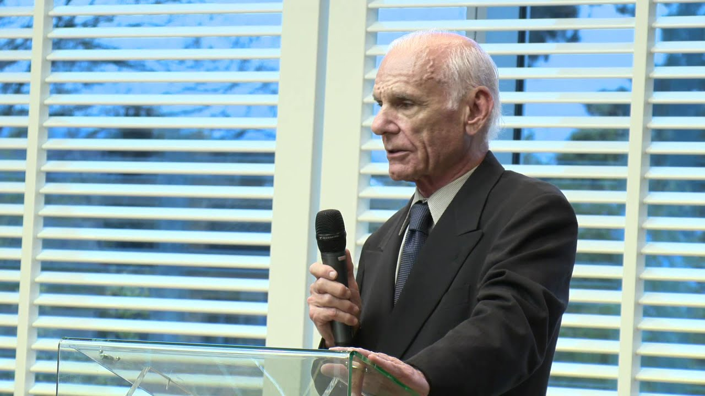
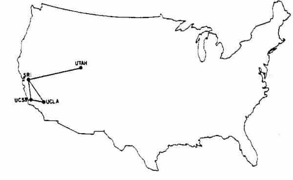
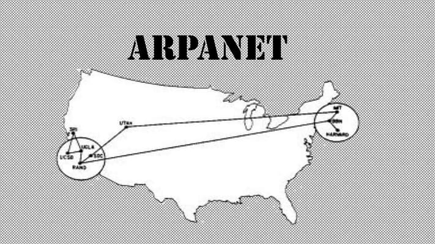

📋 Resumo
Foi nesse intervalo que uma ideia ousada, financiada pela recém-criada ARPA dos Estados Unidos, transformou-se em um dos projetos científicos mais revolucionários do século XX: a ARPANET. O que começou como um projeto militar, quase secreto, para garantir comunicações resistentes a ataques durante a Guerra Fria, rapidamente se transformou numa experiência de colaboração científica sem precedentes. Pela primeira vez, computadores espalhados por universidades distantes começaram a formar uma rede, trocando dados em tempo real e inaugurando uma nova era da comunicação humana.
📚 Detalhes
Em 1966, a ARPA decidiu investir seriamente em um projeto que tentasse concretizar uma visão que vinha sendo amadurecida desde o início da década: a ideia de interconectar diferentes computadores de grandes instituições por meio de uma rede que não dependesse de um único centro. A inspiração para isso vinha dos memorandos visionários de J. C. R. Licklider, que imaginava um futuro em que computadores funcionariam em conjunto como um grande sistema interativo de troca de conhecimento.
Licklider havia plantado essa semente intelectual, mas quem transformou o sonho em engenharia real foi Lawrence G. Roberts. Roberts, que no ano anterior havia realizado a primeira conexão remota entre dois computadores (o experimento de 1965), foi chamado pela ARPA em 1966 para liderar oficialmente o projeto de construção de uma rede nacional de computadores. Mesmo relutante a ir para Washington no começo, ele acabou aceitando o desafio depois de entender que teria autonomia total, financiamento robusto e acesso aos melhores laboratórios do país.
O objetivo era claro: criar uma rede experimental capaz de conectar centros de pesquisa e permitir que cientistas compartilhassem computadores, programas e dados. Mas havia um obstáculo colossal: ninguém sabia como construir tal rede. A comutação telefônica tradicional era totalmente inadequada para dados digitais. A transmissão era lenta, o custo era alto, a confiabilidade era baixa e as linhas caíam com frequência. Era como tentar fazer transatlânticos navegarem em um rio raso. Por isso, os engenheiros começaram a se interessar por uma tecnologia que, naquela época, era pouco conhecida fora de círculos acadêmicos: a comutação por pacotes.
Essa ideia, formulada independentemente por três personagens diferentes — Paul Baran (RAND Corporation, EUA), Donald Davies (National Physical Laboratory, Reino Unido) e Leonard Kleinrock (UCLA) — propunha que os dados fossem divididos em pacotes pequenos e enviados de forma independente, encontrando rotas alternativas caso trechos da rede falhassem. Isso tornava comunicação digital eficiente e, mais importante, resistente a interrupções — uma qualidade essencial no contexto da Guerra Fria. Kleinrock, matemático e pioneiro da teoria de filas, já havia publicado em 1961 uma tese mostrando matematicamente que redes por pacotes poderiam funcionar em grande escala. Seus modelos teóricos se tornariam fundamentais para a ARPANET. Roberts estudou o trabalho de Baran e Davies e percebeu que a comutação por pacotes era exatamente o que a ARPA precisava para concretizar a visão de uma rede descentralizada. Em 1967, Roberts apresentou publicamente o projeto da ARPANET na conferência ACM em Gatlinburg, Tennessee.

Sua apresentação causou espanto: a ideia de conectar computadores tão diferentes, de diferentes instituições, usando tecnologia experimental, parecia insana. Muitos duvidavam de que fosse possível. A AT&T, por exemplo, simplesmente recusou a proposta de colaborar no projeto — em suas palavras, “isso nunca funcionará”. Hoje é irônico imaginar que a maior empresa de telecomunicações do mundo recusou participar do nascimento da internet. Com os planos estabelecidos, a ARPA contratou a empresa BBN Technologies (Bolt, Beranek and Newman), de Boston, para construir os equipamentos essenciais da rede: os Interface Message Processors (IMPs), que funcionariam como os primeiros roteadores da história.
Esses IMPs eram caixas pesadas, com hardware moderno para a época, capazes de receber pacotes, encaminhá-los, verificar erros e se comunicar com o computador local. Cada IMP seria instalado em uma instituição participante, formando os nós da rede.
No final de 1969, os IMPs começaram a ser entregues às primeiras quatro instituições escolhidas para iniciar a ARPANET:
• UCLA (Universidade da Califórnia em Los Angeles) – laboratório do professor Leonard Kleinrock;
• SRI (Stanford Research Institute), em Menlo Park;
• UCSB (Universidade da Califórnia em Santa Barbara);
• University of Utah (Universidade de Utah), que tinha avançados projetos gráficos.

A primeira conexão foi estabelecida em 29 de outubro de 1969, quando pesquisadores da UCLA enviaram um comando para o SRI. O objetivo era transmitir a palavra “LOGIN”. Eles digitaram L, enviaram o pacote; depois O; e logo em seguida o sistema caiu e apenas “LO” foi recebido. Essa transmissão falha de duas letras, carregada de simbolismo, é frequentemente lembrada como “o primeiro envio da internet”.
A partir dali, a ARPANET passou a expandir, conectando mais universidades e laboratórios, criando demanda por padrões, protocolos e novas aplicações. O e-mail, por exemplo, surgiu em 1971, logo após a consolidação da rede. Entre 1969 e 1970, a ARPANET cresceu rapidamente. Instituições como MIT, Harvard, NASA Ames e o Air Force Cambridge Research Lab aderiram à rede experimental. Os pesquisadores começaram a perceber que compartilhar computadores era mais eficiente que construir máquinas duplicadas para cada projeto. Isso mudou completamente a forma como a ciência era feita: laboratórios distantes podiam colaborar, trocar arquivos, acessar bancos de dados e participar de projetos interconectados. A comunicação entre cientistas ganhou uma velocidade inédita, e universidades se tornaram, pela primeira vez, parte de uma comunidade digital crescente. A ARPANET também iniciou uma cultura de cooperação que seria fundamental para a internet moderna.

Apesar de financiada pelo Departamento de Defesa, a rede era usada principalmente por pesquisadores civis. As discussões técnicas eram abertas, os protocolos eram debatidos coletivamente, e equipes de diferentes estados e universidades trabalhavam juntas por telefone, correio e, eventualmente, pela própria rede. Essa abertura científica fez com que a ARPANET crescesse como uma comunidade colaborativa, não como um projeto militar fechado. Entre 1966 e 1970, portanto, vemos uma transformação radical: uma ideia teórica se materializou em uma rede operante, jovens pesquisadores tornaram-se pioneiros da engenharia de redes, e universidades se interconectaram pela primeira vez. A ARPANET não era ainda a internet, mas já tinha todos os ingredientes essenciais: descentralização, pacotes, roteamento, interoperabilidade e uma cultura aberta.
A partir dali, era apenas questão de tempo até que o mundo inteiro fosse conectado. Esse período também aparece em diversas obras culturais e documentários. O filme “The Social Network” menciona brevemente o MIT e Harvard como herdeiras dessa cultura computacional. O documentário “The Machine That Changed the World” dedica capítulos à ARPANET e aos IMPs, mostrando imagens raras da instalação das máquinas. Para quem deseja visualizar melhor o ambiente universitário da época, o livro “Where Wizards Stay Up Late”, de Hafner e Lyon, é leitura obrigatória. Ele narra com riqueza de detalhes as personalidades envolvidas, os debates técnicos, os improvisos e a atmosfera de descoberta que envolviam os laboratórios da época. Ao final de 1970, a ARPANET estava consolidada como uma rede funcional. Era pequena, experimental, instável em alguns momentos, mas viva. Era a primeira rede de computadores do mundo. E, sem que os pesquisadores soubessem, aquele projeto universitário financiado pelo Departamento de Defesa acabaria se tornando a espinha dorsal do maior sistema de comunicação que a humanidade já criaria: a internet.
The Social Network
Trailer: https://www.google.com/search?q=the+social+network+trailer&sca
.
The Machine That Changed the World
Documentário: https://www.google.com/search?q=the+machine+that+changed+the+world+documentary&sca
.
Where Wizards Stay Up Late
Livro: https://monoskop.org/images/e/ee/Hafner_Katie_Lyon_Matthew_Where_Wizards_Stay_Up_Late_The_Origins_Of_The_Internet.pdf
.🔗 Fontes de Pesquisa